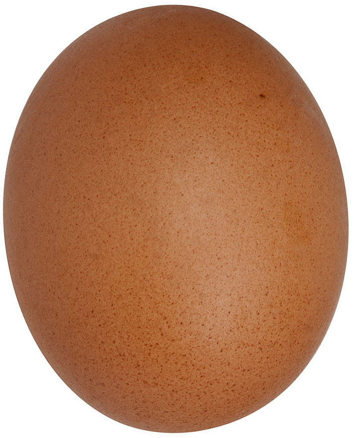

Egg
Eggs are laid by female animals of many different species, including birds, reptiles, amphibians, mammals, and fish, and have been eaten by humans for thousands of years. Bird and reptile eggs consist of a protective eggshell, albumen (egg white), and vitellus (egg yolk), contained within various thin membranes.
The most popular choice for egg consumption are chicken eggs. Other popular choices for egg consumption are duck, quail, roe, and caviar.
Egg yolks and whole eggs store significant amounts of protein and choline, and are widely used in cookery. Due to their protein content, the United States Department of Agriculture categorizes eggs as Meats within the Food Guide Pyramid. Despite the nutritional value of eggs, there are some potential health issues arising from egg quality, storage, and individual allergies.
Chickens and other egg-laying creatures are widely kept throughout the world, and mass production of chicken eggs is a global industry. In 2009, an estimated 62.1 million metric tons of eggs were produced worldwide from a total laying flock of approximately 6.4 billion hens. There are issues of regional variation in demand and expectation, as well as current debates concerning methods of mass production. The European Union recently banned battery husbandry of chickens.
Bird eggs have been valuable foodstuffs since prehistory, in both hunting societies and more recent cultures where birds were domesticated. The chicken was probably domesticated for its eggs from jungle fowl native to tropical and subtropical Southeast Asia and India before 7500 BCE. Chickens were brought to Sumer and Egypt by 1500 BCE, and arrived in Greece around 800 BCE, where the quail had been the primary source of eggs. In Thebes, Egypt, the tomb of Haremhab, built about 1420 BCE, shows a depiction of a man carrying bowls of ostrich eggs and other large eggs, presumably those of the pelican, as offerings. In ancient Rome, eggs were preserved using a number of methods, and meals often started with an egg course. The Romans crushed the shells in their plates to prevent evil spirits from hiding there. In the Middle Ages, eggs were forbidden during Lent because of their richness. The word mayonnaise possibly was derived from moyeu, the medieval French word for the yolk, meaning center or hub.
Egg scrambled with acidic fruit juices were popular in France in the 17th century; this may have been the origin of lemon curd.
The dried egg industry developed in the 19th century, before the rise of the frozen egg industry. In 1878, a company in St. Louis, Missouri started to transform egg yolk and white into a light-brown, meal-like substance by using a drying process. The production of dried eggs significantly expanded during World War II, for use by the United States Armed Forces and its allies.
In 1911, the egg carton was invented by Joseph Coyle in Smithers, British Columbia, to solve a dispute about broken eggs between a farmer in Bulkley Valley and the owner of the Aldermere Hotel. Early egg cartons were made of paper.